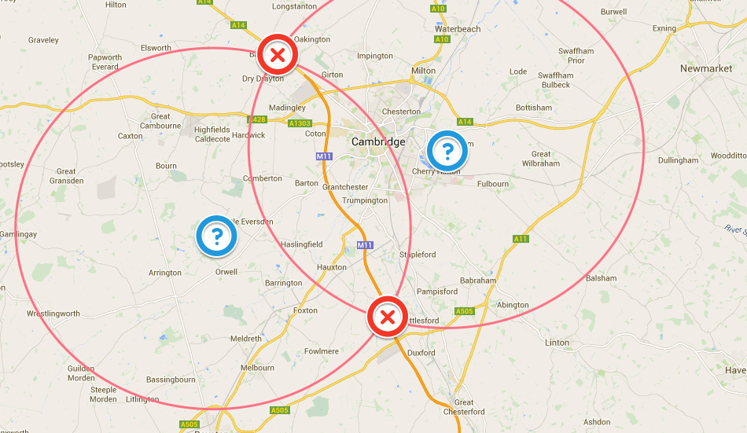

Cambridge's Area 51?
Something very weird happens each time I drive up a particular stretch of the M11/A14. My car's radar system goes off line.
{kind=link}
This is the system which enables my car to spot approaching danger from overtaking cars, to warn about obstacles in front of the car (and even brake) and to automatically adjust the car's speed when driving with cruise control on.
The systems shuts down just after the Imperial War Museum at Duxford on the way north and comes on again around Bar Hill on the A14. In the opposite direction the same thing happens at the same spots.
I've Googled to see if others have the same problem but come up with nothing. So I decided to plot this on a map and see what I could come up with. Making the assumption that the interference was not geographical, but was likely transmitted, I assumed that whatever was causing the failure was transmitting from the centre of a circle who's circumference bisected both points (see map). There are obviously two circles which fit the bill - the centre of one is in the middle of a very unpopulated area of farmland; the centre of the other falls close to Cherry Hinton, therefore the likelier candidate.
{kind=link}
Looking at the map closely around Cherry Hinton there are few things which stand out. Two that do would seem to be ARM - the mobile chip maker, and Cambridge Airport.
{kind=link}
Whatever is causing the outage it does make me glad my car isn't self-driving....
UPDATE.... One of my US journalist friends Stephen Trimble suggested my analogy was not quite correct and provided a possible explanation: "Several major US and Five Eyes intelligence installations are in that neighborhood. Area 51 is probably not the best comparison, since that's basically just a remote airfield. But it may be more like Fort Meade, the headquarters of the NSA."